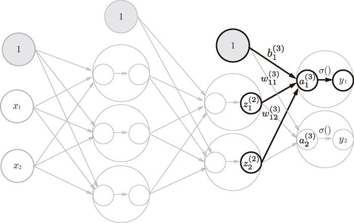

本节的重点是神经网络的运算可以作为矩阵运算打包进行。因为神经网络各层的运算是通过矩阵的乘法运算打包进行的（从宏观视角来考虑），所以即便忘了（未记忆）具体的符号规则，也不影响理解后面的内容。
本节的重点是神经网络的运算可以作为矩阵运算打包进行。因为神经网络各层的运算是通过矩阵的乘法运算打包进行的（从宏观视角来考虑），所以即便忘了（未记忆）具体的符号规则，也不影响理解后面的内容。
现在我们来进行神经网络的实现。这里我们以图 3-15 的 3 层神经网络为对象，实现从输入到输出的（前向）处理。在代码实现方面，使用上一节介绍的 NumPy 多维数组。巧妙地使用 NumPy 数组，可以用很少的代码完成神经网络的前向处理。
图 3-15 3 层神经网络：输入层（第 0 层）有 2 个神经元，第 1 个隐藏层（第 1 层）有 3 个神经元，第 2 个隐藏层（第 2 层）有 2 个神经元，输出层（第 3 层）有 2 个神经元
在介绍神经网络中的处理之前，我们先导入 、 等符号。这些符号可能看上去有些复杂，不过因为只在本节使用，稍微读一下就跳过去也问题不大。
我们先从定义符号开始。请看图 3-16。图 3-16 中只突出显示了从输入层神经元  到后一层的神经元 的权重。
到后一层的神经元 的权重。
如图 3-16 所示，权重和隐藏层的神经元的右上角有一个“(1)”，它表示权重和神经元的层号（即第 1 层的权重、第 1 层的神经元）。此外，权重的右下角有两个数字，它们是后一层的神经元和前一层的神经元的索引号。比如， 表示前一层的第 2 个神经元 到后一层的第 1 个神经元 的权重。权重右下角按照“后一层的索引号、前一层的索引号”的顺序排列。
图 3-16 权重的符号
现在看一下从输入层到第 1 层的第 1 个神经元的信号传递过程，如图 3-17 所示。
图 3-17 从输入层到第 1 层的信号传递
图 3-17 中增加了表示偏置的神经元“1”。请注意，偏置的右下角的索引号只有一个。这是因为前一层的偏置神经元（神经元“1”）只有一个 4。
4任何前一层的偏置神经元“1”都只有一个。偏置权重的数量取决于后一层的神经元的数量（不包括后一层的偏置神经元“1”）。——译者注
为了确认前面的内容，现在用数学式表示 。 通过加权信号和偏置的和按如下方式进行计算。

此外，如果使用矩阵的乘法运算，则可以将第 1 层的加权和表示成下面的式（3.9）。
其中，、 、、 如下所示。
、、 如下所示。

下面我们用 NumPy 多维数组来实现式（3.9），这里将输入信号、权重、偏置设置成任意值。
X = np.array([1.0, 0.5]) W1 = np.array([[0.1, 0.3, 0.5], [0.2, 0.4, 0.6]]) B1 = np.array([0.1, 0.2, 0.3]) print(W1.shape) # (2, 3) print(X.shape) # (2,) print(B1.shape) # (3,) A1 = np.dot(X, W1) + B1
这个运算和上一节进行的运算是一样的。W1 是 2 × 3 的数组，X 是元素个数为 2 的一维数组。这里，W1 和 X 的对应维度的元素个数也保持了一致。
接下来，我们观察第 1 层中激活函数的计算过程。如果把这个计算过程用图来表示的话，则如图 3-18 所示。
图 3-18 从输入层到第 1 层的信号传递
如图 3-18 所示，隐藏层的加权和（加权信号和偏置的总和）用 a 表示，被激活函数转换后的信号用 z 表示。此外，图中 h() 表示激活函数，这里我们使用的是 sigmoid 函数。用 Python 来实现，代码如下所示。
Z1 = sigmoid(A1) print(A1) # [0.3, 0.7, 1.1] print(Z1) # [0.57444252, 0.66818777, 0.75026011]
这个 sigmoid() 函数就是之前定义的那个函数。它会接收 NumPy 数组，并返回元素个数相同的 NumPy 数组。
下面，我们来实现第 1 层到第 2 层的信号传递（图 3-19）。
W2 = np.array([[0.1, 0.4], [0.2, 0.5], [0.3, 0.6]]) B2 = np.array([0.1, 0.2]) print(Z1.shape) # (3,) print(W2.shape) # (3, 2) print(B2.shape) # (2,) A2 = np.dot(Z1, W2) + B2 Z2 = sigmoid(A2)
除了第 1 层的输出（Z1）变成了第 2 层的输入这一点以外，这个实现和刚才的代码完全相同。由此可知，通过使用 NumPy 数组，可以将层到层的信号传递过程简单地写出来。

图 3-19 第 1 层到第 2 层的信号传递
最后是第 2 层到输出层的信号传递（图 3-20）。输出层的实现也和之前的实现基本相同。不过，最后的激活函数和之前的隐藏层有所不同。
def identity_function(x):
return x
W3 = np.array([[0.1, 0.3], [0.2, 0.4]])
B3 = np.array([0.1, 0.2])
A3 = np.dot(Z2, W3) + B3
Y = identity_function(A3) # 或者Y = A3
这里我们定义了 identity_function() 函数（也称为“恒等函数”），并将其作为输出层的激活函数。恒等函数会将输入按原样输出，因此，这个例子中没有必要特意定义 identity_function()。这里这样实现只是为了和之前的流程保持统一。另外，图 3-20 中，输出层的激活函数用 σ() 表示，不同于隐藏层的激活函数 h()（σ 读作 sigma）。

图 3-20 从第 2 层到输出层的信号传递
输出层所用的激活函数，要根据求解问题的性质决定。一般地，回归问题可以使用恒等函数，二元分类问题可以使用 sigmoid 函数，多元分类问题可以使用 softmax 函数。关于输出层的激活函数，我们将在下一节详细介绍。
至此，我们已经介绍完了 3 层神经网络的实现。现在我们把之前的代码实现全部整理一下。这里，我们按照神经网络的实现惯例，只把权重记为大写字母 W1，其他的（偏置或中间结果等）都用小写字母表示。
def init_network():
network = {}
network['W1'] = np.array([[0.1, 0.3, 0.5], [0.2, 0.4, 0.6]])
network['b1'] = np.array([0.1, 0.2, 0.3])
network['W2'] = np.array([[0.1, 0.4], [0.2, 0.5], [0.3, 0.6]])
network['b2'] = np.array([0.1, 0.2])
network['W3'] = np.array([[0.1, 0.3], [0.2, 0.4]])
network['b3'] = np.array([0.1, 0.2])
return network
def forward(network, x):
W1, W2, W3 = network['W1'], network['W2'], network['W3']
b1, b2, b3 = network['b1'], network['b2'], network['b3']
a1 = np.dot(x, W1) + b1
z1 = sigmoid(a1)
a2 = np.dot(z1, W2) + b2
z2 = sigmoid(a2)
a3 = np.dot(z2, W3) + b3
y = identity_function(a3)
return y
network = init_network()
x = np.array([1.0, 0.5])
y = forward(network, x)
print(y) # [ 0.31682708 0.69627909]
这里定义了 init_network() 和 forward() 函数。init_network() 函数会进行权重和偏置的初始化，并将它们保存在字典变量 network 中。这个字典变量 network 中保存了每一层所需的参数（权重和偏置）。forward() 函数中则封装了将输入信号转换为输出信号的处理过程。
另外，这里出现了 forward（前向）一词，它表示的是从输入到输出方向的传递处理。后面在进行神经网络的训练时，我们将介绍后向（backward，从输出到输入方向）的处理。
至此，神经网络的前向处理的实现就完成了。通过巧妙地使用 NumPy 多维数组，我们高效地实现了神经网络。